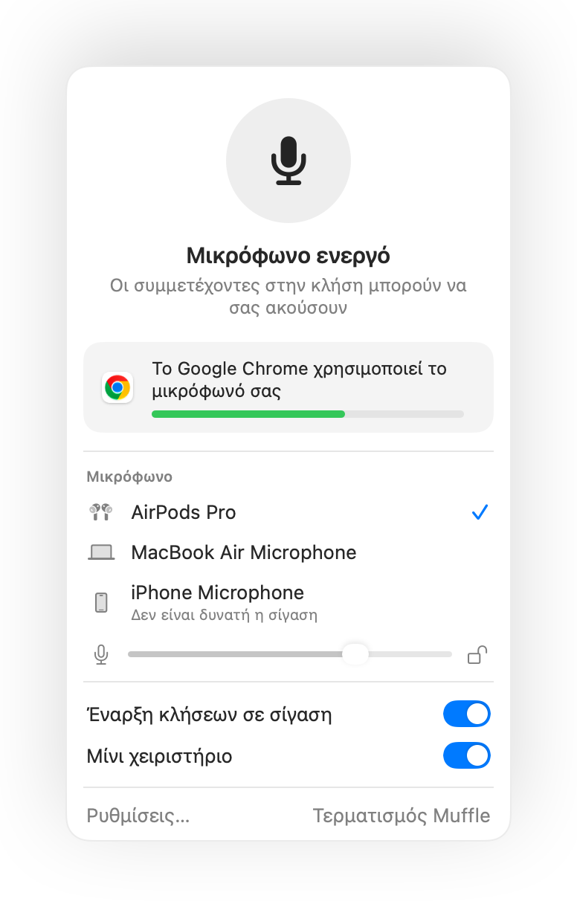

Πώς να κάνετε σίγαση στο Microsoft Teams με AirPods σε Mac
Η συντόμευση του Teams, Command-Shift-M, λειτουργεί μόνο όταν το παράθυρο του Teams είναι ενεργό. Σε μια τηλεδιάσκεψη συνήθως κοιτάτε κάπου αλλού: ένα έγγραφο, ένα πρόγραμμα περιήγησης ή μια κοινή οθόνη.
Το Muffle θέτει σε σίγαση το μικρόφωνό σας από οπουδήποτε, στην app Teams και στο Teams στο web. Πατήστε τα AirPods σας, πατήστε μία συντόμευση ή κάντε κλικ στη γραμμή μενού.
Σίγαση στο Teams από οπουδήποτε
- 1
Εγκαταστήστε το Muffle και επιτρέψτε την πρόσβαση στο μικρόφωνο.
- 2
Συνδεθείτε στη συνάντηση Teams.
- 3
Πατήστε Control-Option-M ή το στέλεχος των AirPods για σίγαση. Το εικονίδιο στη γραμμή μενού γίνεται κόκκινο.
- 4
Πατήστε ξανά για κατάργηση σίγασης, ή κρατήστε πατημένη τη συντόμευση για να μιλήσετε ενώ είστε σε σίγαση.

- Το Teams σε καρτέλα περιηγητή αποκτά την ίδια υποστήριξη AirPods με το Google Meet μέσω του Muffle.
- Ενεργοποιήστε τη ρύθμιση «Σίγαση όταν κλειδώνει η οθόνη» ώστε να μην μένει ποτέ ανοιχτό το μικρόφωνό σας όταν απομακρύνεστε.
Ερωτήσεις
Λειτουργεί το πάτημα των AirPods στην εφαρμογή Teams;
Εξαρτάται από την έκδοση του Teams, καθώς το Teams μπορεί να δεσμεύει το ίδιο το πάτημα. Η συντόμευση και το κουμπί στη γραμμή μενού του Muffle λειτουργούν σε κάθε περίπτωση.
Θα φαίνομαι σε σίγαση στο Teams;
Όχι απαραίτητα. Το Muffle θέτει σε σίγαση το μικρόφωνο, επομένως το Teams μπορεί να δείχνει το μικ ανοιχτό, ενώ όλοι ακούν απόλυτη σιωπή.